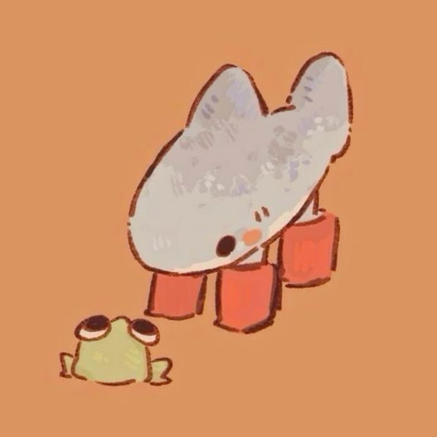

Ruth Romero
Sobre mí!!!
Sóc una noia apassionada pels videojocs, on trobo desafiaments i creativitat. M'encanta crear i dibuixar, especialment art digital inspirat en personatges i mons que m'agraden. Sempre estic buscant noves maneres d'expressar les meves idees, i el dibuix és una de les meves formes preferides de fer-ho.
La música és part essencial del meu dia a dia, escolto de tot una mica mentre jugo o dibuix. A més, sóc una amant dels animals i m'encanta passar temps amb ells, recolzant sempre les causes de benestar animal.
Projectes
- Space Wars: Vaig realitzar una pàgina web que explicava tota la història del joc que vam crear. Dintre d'aquesta, hi havia merchandising, informació sobre nosaltres, un tutorial de com funciona el joc i promoció del mateix. Ens vam inspirar en un joc que combinava estratègia i acció espacial, on els jugadors havien de conquerir planetes, gestionar recursos i lluitar en batalles èpiques. Volíem crear una experiència immersiva per als jugadors, amb una estètica retro-futurista i una història que enganxés des del primer moment. Amb l'equip, vam cuidar cada detall, des de la jugabilitat fins a la interfície gràfica, per assegurar-nos que fos accessible i emocionant per a tothom. La web reflecteix aquesta passió pel projecte i serveix com a plataforma perquè els usuaris descobreixin tot el que envolta Space Wars.
Xarxes socials
La meva adreça de correo és: rromerocarretero.cf@iesesteveterradas.cat
I aquest és el meu: GitHub